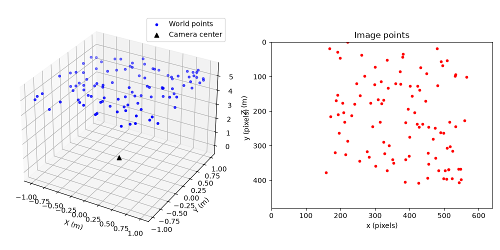

Note
Go to the end to download the full example code.
Projecting 3D points to image points#
pysdic.project_points() projects 3D world points to 2D image points with a camera
model made of three transformations:
The result is a pysdic.ProjectionResult with the image points and, optionally,
the Jacobians.
See also
pysdic.Camera, which gathers the three transformations with a sensor size
(see Projection of meshes with a camera).
Projection#
100 random points in \([-1, 1]^2 \times [4.5, 5.5]\) m are seen by a camera close to the origin (small rotation and translation), with a pinhole intrinsic (focal length 1000 pixels, principal point \((320, 240)\)) and a Brown-Conrady distortion.
import numpy
from pysdic import BrownDistortion, PerspectiveExtrinsic, PinholeIntrinsic, project_points
rng = numpy.random.default_rng(0)
world_points = numpy.stack((rng.uniform(-1.0, 1.0, 100), rng.uniform(-1.0, 1.0, 100), rng.uniform(4.5, 5.5, 100)), axis=-1)
rvec, tvec = numpy.array([0.01, 0.02, 0.03]), numpy.array([0.1, -0.1, 0.2])
extrinsic = PerspectiveExtrinsic.from_rt(rvec, tvec) # X_c = R X_w + t
intrinsic = PinholeIntrinsic.from_matrix([[1000.0, 0.0, 320.0], [0.0, 1000.0, 240.0], [0.0, 0.0, 1.0]])
distortion = BrownDistortion([0.1, -0.05, 0.001, 0.002, 0.01]) # k1, k2, p1, p2, k3
result = project_points(world_points, intrinsic, distortion, extrinsic)
image_points = result.image_points # (100, 2)
print(f"Image points: shape {image_points.shape}")
Image points: shape (100, 2)
The image points have \(x\) to the right and \(y\) downward. The center of the camera is \(\vec{C} = -R^T \vec{t}\).
import matplotlib.pyplot as plt
from scipy.spatial.transform import Rotation
center = -Rotation.from_rotvec(rvec).as_matrix().T @ tvec
fig = plt.figure(figsize=(10, 5))
ax_3d = fig.add_subplot(121, projection="3d")
ax_3d.scatter(*world_points.T, c="b", s=10, label="World points")
ax_3d.scatter(*center, c="k", s=40, marker="^", label="Camera center")
ax_3d.set_xlabel("X (m)")
ax_3d.set_ylabel("Y (m)")
ax_3d.set_zlabel("Z (m)")
ax_3d.legend()
ax_image = fig.add_subplot(122)
ax_image.scatter(image_points[:, 0], image_points[:, 1], c="r", s=10)
ax_image.set_xlim(0, 640)
ax_image.set_ylim(480, 0) # y downward
ax_image.set_aspect("equal")
ax_image.set_xlabel("x (pixels)")
ax_image.set_ylabel("y (pixels)")
ax_image.set_title("Image points")
plt.tight_layout()
plt.show()

Jacobians#
With dx=True the Jacobian with respect to the world points is computed, and with
dp=True the Jacobian jacobian_dp with respect to all the parameters (ordered as
extrinsic, distortion, intrinsic), with the views jacobian_dextrinsic,
jacobian_ddistortion and jacobian_dintrinsic. bypass_dp skips the blocks that
are not needed (filled with NaN): here only the distortion block is computed.
result = project_points(
world_points, intrinsic, distortion, extrinsic,
dx=True, dp=True, bypass_dp=(True, False, True), # Skip (extrinsic, distortion, intrinsic)
)
print(f"jacobian_dx: {result.jacobian_dx.shape}") # (100, 2, 3)
print(f"jacobian_ddistortion: {result.jacobian_ddistortion.shape}") # (100, 2, 5)
print(f"jacobian_dp: {result.jacobian_dp.shape}") # (100, 2, 6 + 5 + 4)
jacobian_dx: (100, 2, 3)
jacobian_ddistortion: (100, 2, 5)
jacobian_dp: (100, 2, 15)
Missing transformations#
A transformation given as None is replaced by the identity (pysdic.NoExtrinsic,
pysdic.NoDistortion or pysdic.NoIntrinsic, without parameters): here a
camera without distortion, and the distortion alone applied to normalized points (as
pysdic.distort_points()).
undistorted_image_points = project_points(world_points, intrinsic, None, extrinsic).image_points
print(f"Max effect of the distortion: {numpy.linalg.norm(image_points - undistorted_image_points, axis=1).max():.2f} pixels")
normalized_points = rng.uniform(-0.5, 0.5, (100, 2))
distorted_points = project_points(normalized_points, None, distortion, None).image_points # 2D input: NoExtrinsic(input_dim=2)
print(f"Distorted points: shape {distorted_points.shape}")
Max effect of the distortion: 2.53 pixels
Distorted points: shape (100, 2)
Total running time of the script: (0 minutes 0.225 seconds)